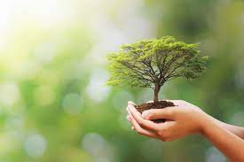

Tabla de contenido
El vocablo naturaleza proviene del latín “natura” que significa natural . Si se habla de forma específica, la naturaleza y vida engloba al universo, mundo natural y el material, haciendo alusión a todos aquellos fenómenos que ocurren en el mundo existente y donde viven todas las especies conocidas hasta el momento, es decir, la vida misma.
La intervención del hombre en la naturaleza ha ido afectando gravemente la vida natural en el planeta tierra, es por eso y en pro de su defensa, que se origina la ecología, que está encargada de preservar el medio ambiente a través de la difusión de mensajes ecológicos en donde se invita a que se cuide la naturaleza que está a nuestro alrededor para que de esta manera no se ponga en riesgo la vida de los seres vivos, ni de los ecosistemas que habitan en el planeta.
El término es conocido como una armonía y dinámica entre la naturaleza muerta (materia inerte) y los seres vivos, incluyendo entonces a la diversidad descubierta con el paso de los años, es decir, actividades sísmicas, climáticas, geológicas, volcánicas, atmosféricas y geográficas.
Los biólogos habían dividido a los seres vivos en dos reinos diferentes, el primero era el reino Plantae y el segundo el Animalia, sin embargo, en el siglo XIX hubo una transformación en el conocimiento y descubrieron que existían más tipos de vida, por ejemplo, los hongos y las bacterias, pero ninguno podía ser incluido en los reinos existentes porque no reunían las características necesarias para ingresarlos, así que más adelante, en el año 1969, el científico Robert Whittaker creó 3 reinos más para incluir al resto de las formas vivientes que existen hasta ahora, estos son Animalia, Plantae, Fungi, Monera y Protista.
Abarca a todas las especies animales que existen actualmente, aunado a esto, plasma el conocimiento claro que todas esas especies son heterótrofas y multicelulares, por lo que no tienen la capacidad de producir sus propios alimentos. Cada célula tiene carencia de pigmentos fotosintéticos, esto quiere decir que los animales solo pueden obtener los nutrientes a través del consumo de otros organismos vivos o artificiales.
Acá se reúnen todas las plantas existentes en la tierra, además, se explica que ellas, a diferencia de los animales, sí tienen la capacidad de producir sus propios nutrientes, además de carbón, fibras y otros nutrientes y minerales útiles para la vida. Un punto de suma importancia en las plantas, es que puede transformar energía solar en su propio alimento y producen oxígeno gracias a la fotosíntesis. Ejemplo, las flores y plantas medicinales como el áloe vera.
Acá se reúnen todos los hongos, los cuales se alimentan a través de los nutrientes de las materias en descomposición ¿Cómo lo logran? absorbiendolos. Estos hongos sólo pueden crecer en lugares sombreados u oscuros, generan esporas con mucha resistencia a la sequedad y al calor, además viven sobre la vegetación. Acá también pueden figurar los parásitos que viven gracias a los animales y a la humanidad.
Aquí se habla de los organismos unicelulares y microscópicos, los cuales se alimentan a través de la absorción de nutrientes o por la fotosíntesis. Su reproducción es asexual y por bipartición. Aquí está integrada la bacteria y sus derivados, quienes producen enfermedades como el cólera, neumonía o tuberculosis.
Aquí se reúnen los organismos multicelulares de tipo microscópicos, es decir, las células eucariotas. Estas generalmente son de mayor tamaño que las bacterias y pueden moverse. El reino protista está dotado de células acuáticas, abarcando así a los seres de agua dulce y aquellos que viven en tejidos húmedos de otros organismos vivos.
| Conceptos recientes: | |
|---|---|
| Ácido Hialurónico | Horizontal |
| Acoso | Reinserción |
| Texto Literario | Satisfacción |